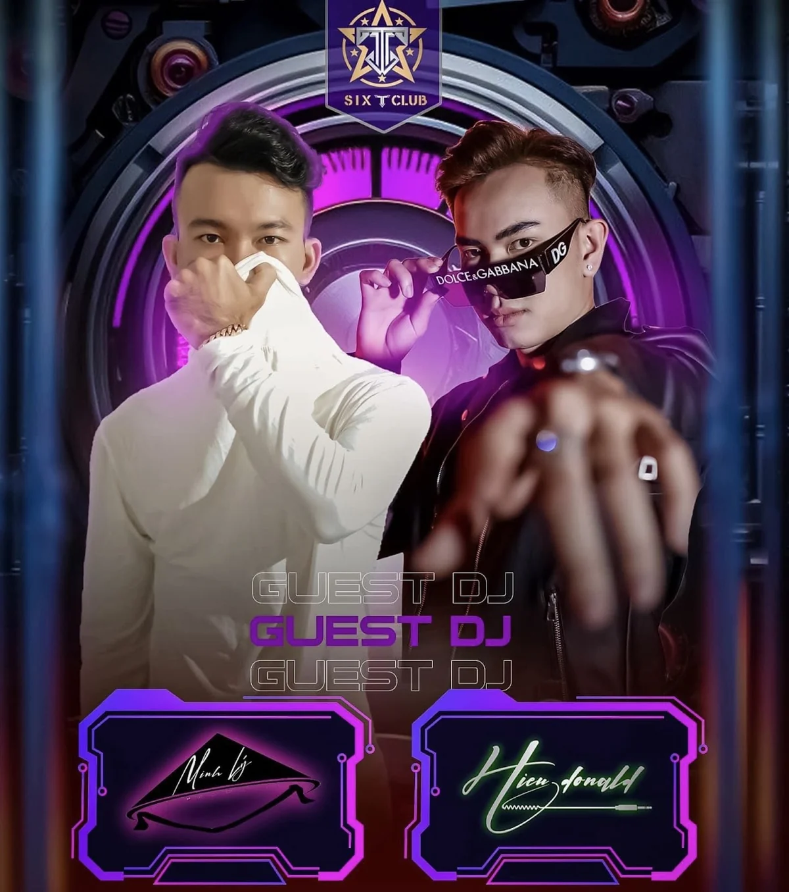
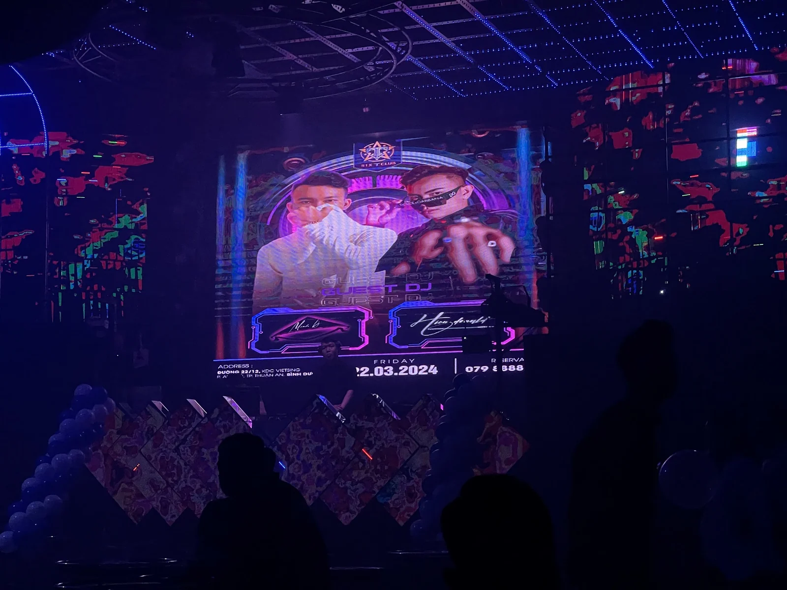

Bản nghe thử · 2026
Liễu Thanh Yên x J97
Minh Hieu Remix 2K26
Một bản remix đang được lưu trong archive cá nhân. Website sử dụng đoạn preview 60 giây để giới thiệu màu sắc âm nhạc mà không công khai toàn bộ file master.
Studio cá nhân về âm nhạc & thử nghiệm công cụ. Nơi lưu trữ hành trình làm nhạc, ảnh archive, ghi chú workflow, và các dự án kết hợp AI, tools & music.
MINH HIEU STUDIO là một góc nhỏ để lưu lại âm nhạc, Vinahouse, những lần đứng sau bàn DJ và các kinh nghiệm thực tế trong quá trình làm nhạc.
Đây không phải hồ sơ thành tích được dựng cho đầy trang. Mỗi bản nhạc, hình ảnh, ghi chú và công cụ xuất hiện ở đây đều gắn với một quá trình làm việc thật.
Bản nghe thử được lấy trực tiếp từ file master do Minh Hiếu cung cấp và chỉ phát hành dưới dạng preview trên website.
Minh Hieu Remix 2K26
Một bản remix đang được lưu trong archive cá nhân. Website sử dụng đoạn preview 60 giây để giới thiệu màu sắc âm nhạc mà không công khai toàn bộ file master.
Hướng làm việc tập trung vào lựa chọn âm sắc, arrangement, xử lý vocal, đoạn chuyển và cách hoàn thiện phiên bản phù hợp cho việc nghe hoặc biểu diễn.
Project, sample, preset và plugin được tổ chức để giảm thời gian tìm kiếm, hạn chế mất đường dẫn và giữ cho những project cũ có thể mở lại sau thời gian dài.
Những công cụ được hình thành từ vấn đề thật trong quá trình làm nhạc. Trạng thái của từng dự án được ghi rõ.
SampleGuard FL được phát triển để tìm sample nhanh hơn, ghi nhớ sample đã dùng theo từng project và kiểm tra rủi ro trước khi xử lý file trùng.

Tìm sample trong thư viện cục bộ, nghe preview và kéo thả vào FL Studio mà không phải mở nhiều thư mục trong lúc đang làm nhạc.

Mô phỏng việc xử lý sample trùng trước khi áp dụng thật, giúp nhận diện file có nguy cơ đang được project cũ tham chiếu.

Ghi nhớ mối liên hệ giữa sample và project để hỗ trợ tìm lại đúng file, đúng vị trí và đúng ngữ cảnh khi mở lại dự án cũ.
Hình ảnh thật từ những lần đứng tại booth, poster và không gian sự kiện.


Những vấn đề từng gặp khi làm việc với FL Studio, sample, plugin, project và AI.
Hai file trùng tên hoặc nghe gần giống nhau chưa chắc đều có thể xóa. Project cũ có thể đang tham chiếu đúng đường dẫn của một file cụ thể. Trước khi dọn, cần kiểm tra vị trí file, project đang sử dụng và giữ bản sao có thể phục hồi.
Project không mở được có thể do plugin, preset, đường dẫn sample hoặc phiên bản phần mềm. Việc đầu tiên là giữ nguyên file gốc, kiểm tra autosave và cô lập thành phần gây lỗi trước khi reset, xóa hoặc thay đổi dữ liệu.
AI phù hợp để tìm lỗi, phân tích phương án và triển khai đúng phần việc được giao. Thiết kế đã duyệt, dữ liệu thật và hướng đi của sản phẩm cần được giữ nguyên cho đến khi có quyết định thay đổi rõ ràng.
Góp ý về âm nhạc, FL Studio, SampleGuard hoặc nội dung trên website có thể gửi qua email.